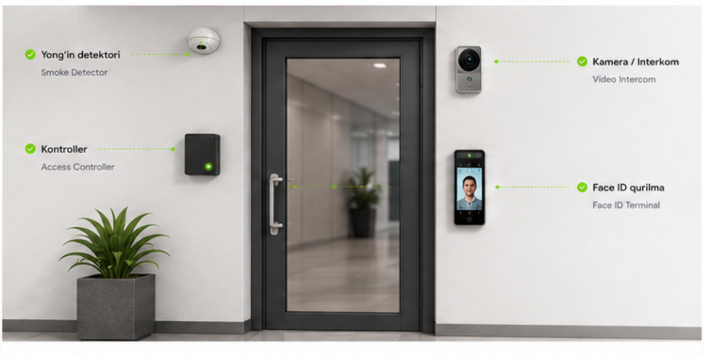

Jami: 32
Entry Door MainOnlayn
Eshik kirish tizimi · Green Tower, 1-qavat
Signal kuchi-62 dBm
Sog'liq darajasiA'lo
92
Qurilma ko'rinishi

Firmwarev2.4.1
IP manzil192.168.1.45
MAC manzil20:4E:7F:12:9A:BC
Uptime12 kun 4 soat
Oxirgi sinx.24-may, 14:28